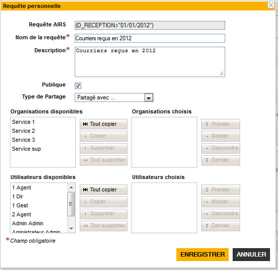

La fonctionnalité requêtes personnelles permet d'enregistrer une recherche paramétrée afin de la ré-exécuter a posteriori. Ces requêtes peuvent également être partagées avec des utilisateurs nommés, une organisation, ou bien avec tous les utilisateurs. La création d’une requête personnelle se fait depuis la Vue Simple, en cliquant sur le bouton . Une fenêtre modale s’ouvre alors pour personnaliser l’enregistrement de la requête :

Requête AIRS : affiche la requête de recherche au format AIRS. Cette ligne n’est pas éditable,
Nom de la requête : le libellé de la requête,
Description : le texte décrivant la requête exécutée,
Publique : la requête peut être visible par tous les utilisateurs ?,
Type de partage : une requête peut ne pas être partagée (Personnelle) ou bien avoir plusieurs types de partages.
Si une requête est Personnelle, alors elle ne sera visible que pour l’utilisateur qui l’aura créée. La requête peut être Partagée avec… ; dans ce cas, la fenêtre modale laisse apparaître de nouveaux champs pour sélectionner la ou les organisation(s) avec lesquelles l'utilisateur souhaite partager cette requête (toute personne appartenant à une des organisations cibles sera alors en mesure de voir la requête), ou bien la ou les utilisateur(s) parmi ceux existants.
Pour activer un partage, l'utilisateur doit sélectionner le(s) organisation(s)/utilisateur(s) et cliquer sur . Si une requête est partagée avec toute le monde, alors tout utilisateur ayant accès à l'application pourra consulter la requête.
Les requêtes personnelles présentent les requêtes mémorisées auxquelles l'utilisateur peut accéder. On distingue les 3 thématiques suivantes : les requêtes personnelles, les requêtes partagées et les requêtes abonnées.